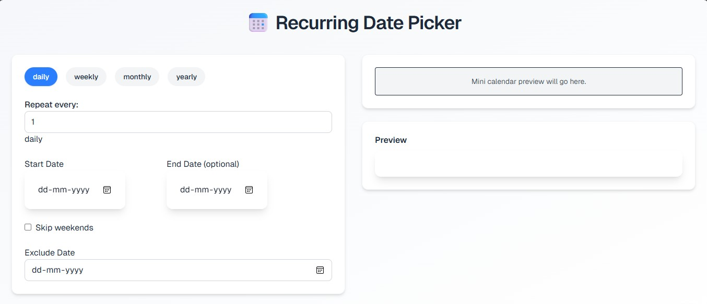
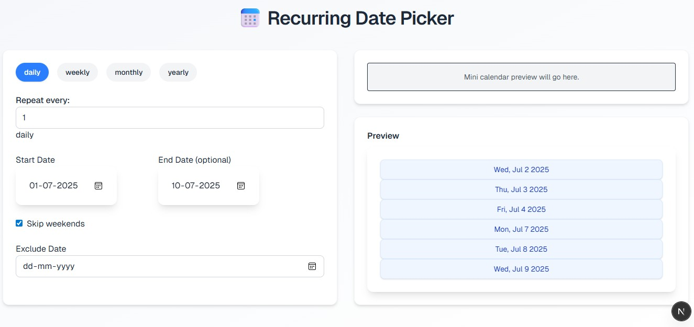
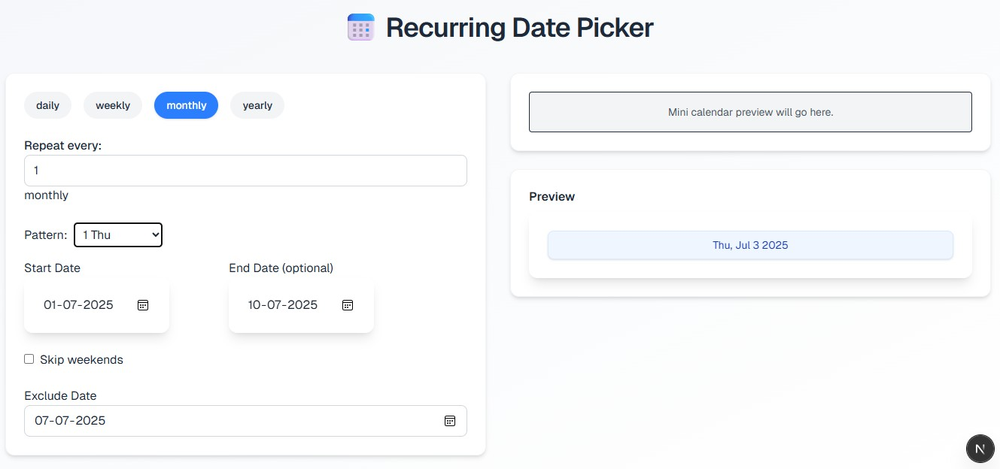
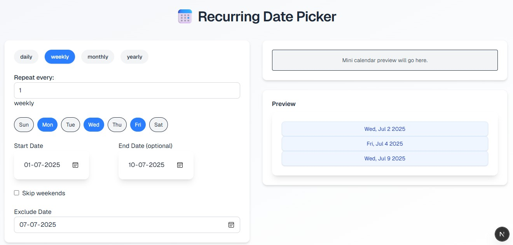
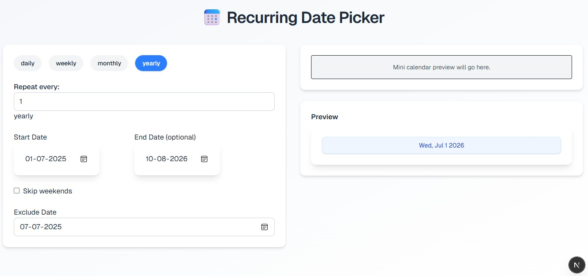

🗓️ Recurring Date Picker
A fully customizable and reusable date picker component that allows users to select recurring dates for events, reminders, or tasks. Built with pure JavaScript and styled using Tailwind CSS.
🔧 What It Does
- Selects single dates or recurring weekly/monthly dates
- Calendar-based visual date selection interface
- Dynamically displays and manages recurring selections
- Validates selections and supports deletion
🖼️ How It Works – Screenshots
1️⃣ Date Picker UI
Initial interface showing calendar and toggle options.
2️⃣ Weekly/Monthly Options
User selects recurring frequency (e.g., every Monday).

3️⃣ Final Output Preview
Displays selected and formatted dates in summary list.

🧰 Tech Stack
- Frontend: HTML, CSS, Tailwind CSS, JavaScript
- No frameworks: Pure vanilla JavaScript
- Reusable: Component for forms and schedulers
🎯 Key Highlights
- Lightweight and framework-free implementation
- Highly reusable and customizable in web forms
- Built with accessibility and responsiveness in mind